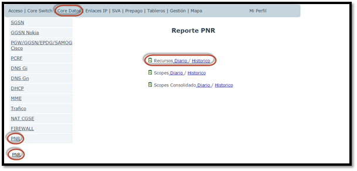
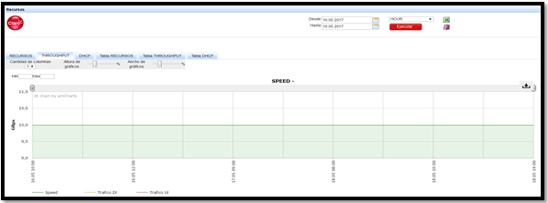
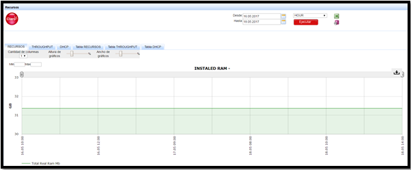
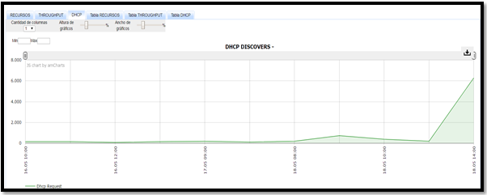

Cisco PNR - CSVs¶
1. OBJETIVO¶
El presente documento busca explicar y detallar el proceso que genera PNR MIBS.
2. ALCANCE¶
Áreas involucradas: Performance de Red
3. DEFINICIONES¶
Servidor de desarrollo: falda.claro.amx Servidor productivo: cortado.claro.amx
4. DESCRIPCION GENERAL¶
PNR es una plataforma que maneja las IP asignadas mediante DHCP. En el servidor de PNR se generan archivos CSV mediante comando donde se muestra la información de las IP (utilización, cantidad disponible, cantidad asignadas y su scope name correpondiente). Estos archivos se generan cada media hora.
5. MACRO FLUJO DEL PROCESO¶
- SUMPNRPENTAHOENDTOEND
- INSERT TABLE FILES
- EXECUTE HOUR PROCEDURE

- SUM PNR BH DAY IBHW END TO END
- SET ENVIROMENT
- CALCULAR SUM. BH DAY IBHW
- UP PROCESS TO RUN STATUS

6. DESCRIPCIÓN DETALLADA¶
6.1. Datos Origen¶
- Server Origen y Path:
10.104.200.182/10.104.217.86 /var/log/pnr_report User: calidadpnr Password: SsBTU27s
6.2. Datos Destino¶
- Server Destino: cortado.claro.amx
- Conversión de Archivos: Si
- Tabla Files: Si
- Tabla Auxiliar: Si
- Frecuencia de corrida del proceso: cada 1 hora
- Regionales: No
- RAW Si/No: Si
- Hour Si/No: Si
- Day Si/No: Si
- BH Si/No: Si
- ISABH Si/No: Si
- Ruta: /calidad/PNR
6.3. Shell Copiar Archivos Origen a Destino y limpieza de los mismos¶
Los Scripts tienen las siguientes funciones:
1- Copiar los archivos
2- Ejecutar Pentaho:
No aplica esta sub-seccion.
6.5. Pentaho¶
No aplica esta sub-seccion.
7. REPROCESO MANUAL¶
P_SVA_PNR_REC_HOUR (P_FECHA_DESDE IN CHAR, P_FECHA_HASTA IN CHAR ) P_SVA_PNR_REC_IBHW (P_FECHA_DESDE IN CHAR, P_FECHA_HASTA IN CHAR ) P_SVA_PNR_REC_DAILY (P_FECHA_DESDE IN CHAR, P_FECHA_HASTA IN CHAR)
8. SMART¶
Los reportes en la herramienta Smart se muestran de la siguiente manera:
   9. CONTROL DE CAMBIOS¶
| Fecha | Responsable | Ticket Jira | Detalle | Repositorio |
|---|---|---|---|---|
| 12/05/2017 | Franco Rinaldi |